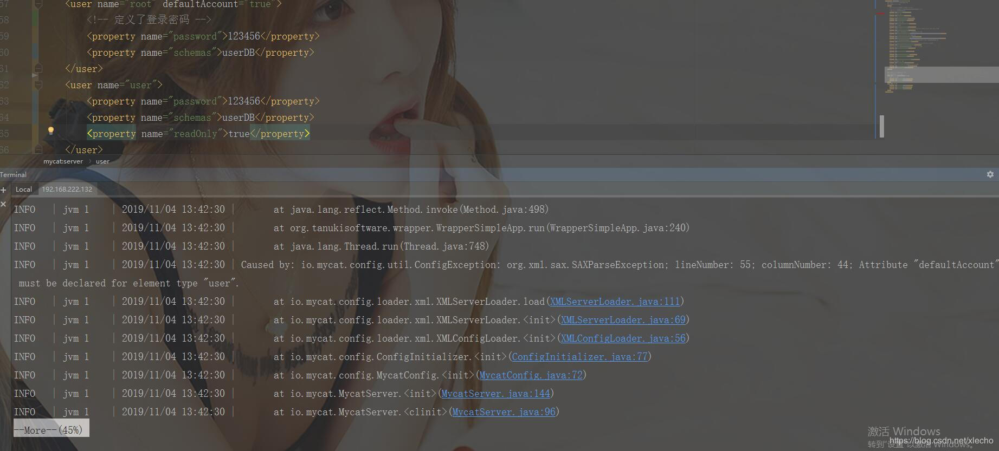

echo编辑整理，欢迎转载，转载请声明文章来源。欢迎添加echo微信(微信号：t2421499075)交流学习。 百战不败，依不自称常胜，百败不颓，依能奋力前行。——这才是真正的堪称强大！！！
该文章可以单独阅读，不一定需要阅读之前一些的文章，主要用于阐述在配置Mycat的时候，碰到的问题。

必须为user标签设置一个defaultAccount属性。
然后我尝试了很多了方式：两个用户都配置defaultAccount为true、两个用户都配置defaultAccount为false、两个用户配置defaultAccount一个为false一个true（两种情况都尝试了）、一个用户配置defaultAccount为true、一个用户配置defaultAccount为false。以上尝试都是出现了同样的错误，只有一种情况没有问题，不配置defaultAccount
不管配置几个用户都不配置defaultAccount，注意：目前我使用的Mycat版本1.6.7.4,老一点的版本都需要该属性。
做一个有底线的博客主